En mayo, disputó su primer Roland Garros, en la primera ronda venció a Lars Burgsmüller por 6-1, 7-6 y
6-1,en la segunda ronda venció a Xavier Malisse por 6-2, 6-4 y 6-4, en la tercera ronda venció al
francés Richard Gasquet por 6-4, 6-3 y 6-2,50 en la cuarta ronda venció al francés Sébastien Grosjean por
6-4, 3-6, 6-0 y 6-3, en cuartos de final venció a David Ferrer por 7-5,6-2 y 6-0, en semifinales
derrotó al número uno Roger Federer (6-3, 4-6, 6-4 y 6-3) y alcanzó su primera final de Grand Slam.El
domingo 5 de junio se convirtió en el cuarto jugador más joven de la historia en ganar ese torneo (a la edad
de diecinueve años y dos días), al vencer al argentino Mariano Puerta en la final, por 6-7, 6-3, 6-1, 7-5.
Además se convirtió en el segundo jugador en ganar Roland Garros en su primera participación por detrás de
Mats Wilander.
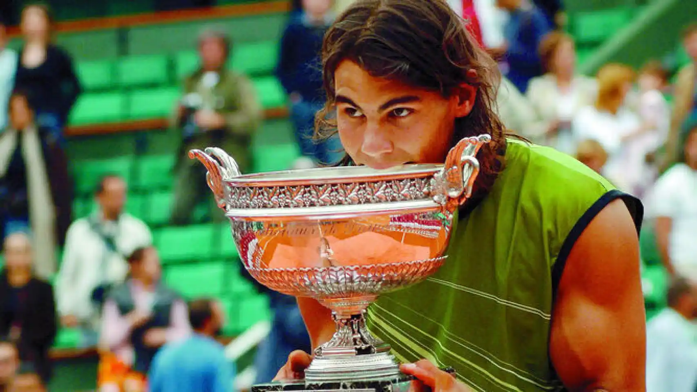
El 29 de mayo de 2006 batió el récord de victorias consecutivas en tierra batida que hasta ese momento
ostentaba Guillermo Vilas con 53 victorias quién le entregó un obsequio conmemorativo. La marca finalizó
al año siguiente en los 81 encuentros.
El 11 de junio de 2006 conquistó su segundo título del Grand Slam ganando a Roger Federer, número uno del
mundo, en la final del torneo francés de Roland Garros. Durante las dos semanas de competición se deshizo
de Robin Söderling en la primera ronda por 6-2, 7-5 y 6-1, de Kevin Kim en la segunda ronda por 6-2, 6-1
y 6-4, en cuatro mangas a Paul-Henri Mathieu en la tercera ronda por 5-7, 6-4, 6-4 y 6-4, y también en
cuatro mangas a Lleyton Hewitt en la cuarta ronda por 6-2, 5-7, 6-4 y 6-2, en cuartos a Novak Djoković
por 6-4, 6-4 y retirada de Djokovic, y en semifinales en tres sets al croata Ivan Ljubičić por 6-4, 6-2 y
7-6. y en la final se enfrentó a Roger Federer yendo de menos a más, le ganó por 1-6, 6-1, 6-4 y 7-6(4) y
por segundo año consecutivo dominó la temporada de tierra batida con autoridad.
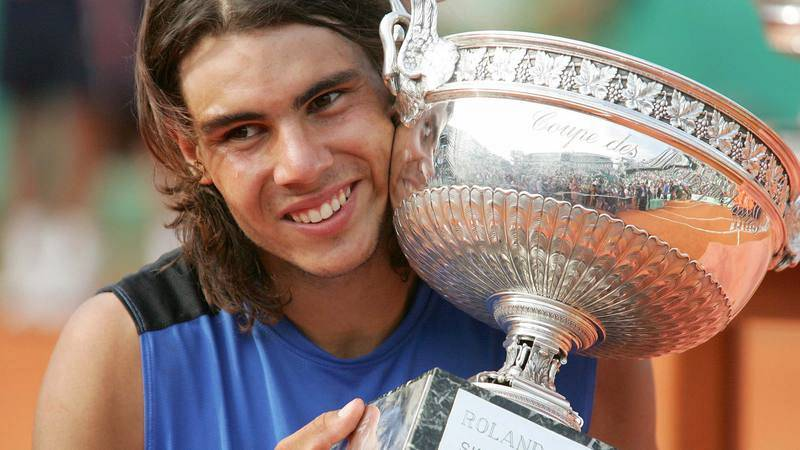
En tierra batida jugó cinco torneos en Europa, ganando los títulos de Montecarlo, Barcelona, y el Masters
Series de Roma. Perdió la final del Masters Series de Hamburgo ante Roger Federer, quien puso fin a su racha
de 81 victorias consecutivas sobre tierra batida. Se recuperó de esta derrota ganando su tercer Roland
Garros consecutivo, derrotando a Federer esta vez en la final. En el transcurso de la temporada, disputó la
Batalla de las superficies en una cancha mitad césped y mitad arcilla en Mallorca contra Federer, venciendo
el primero
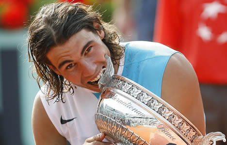
el domingo 25 de mayo empieza el segundo Grand Slam de la temporada: Roland Garros, donde era el tricampeón
defensor y una vez más, máximo favorito al título. Tras el sorteo del cuadro, obviamente quedó en la parte
inferior, quedando situado en el mismo lado del cuadro que el británico Andy Murray y el serbio Novak
Djokovic, a quien podría en una hipotética semifinal. En la 1.ª ronda se enfrentó al brasileño proveniente
de la clasificación, Thomaz Bellucci, a quien derrotó por 7-5, 6-3 y 6-1. En 2.ª ronda enfrentó a otro
jugador proveniente de la clasificación, el francés Nicolas Devilder, a quien venció con suma facilidad por
6-4, 6-0 y 6-1. En 3.ª ronda se enfrentó al finlandés Jarkko Nieminen, a quien ganó por un claro 6-1, 6-3 y
6-1. En 4.ª ronda se enfrentó a su compatriota Fernando Verdasco, siendo este el 4.º tenista zurdo que
enfrentaba de forma consecutiva, a quien ganó por un claro 6-1, 6-0 y 6-2 avanzando a la segunda semana en
París de forma categórica. En cuartos de final, se enfrentó a otro español, Nicolás Almagro (20.º del
mundo), en el día de su cumpleaños 22, Rafa aplastó al murciano por un triple 6-1 en solo 1 hora y 44
minutos avanzando a semifinales sin ceder un solo set y jugando un tenis fantástico. En semifinales se
enfrentó al serbio y 3.º del mundo, Novak Djokovic, a quien venció por 6-4, 6-2 y 7-6(3) en su partido más
trabajado del torneo, llegando a salvar un punto de set en el 5-6 AV mientras estaba al saque, de este modo
llega a la final en París sin ceder sets por segundo año consecutivo, convirtiéndose en el primer jugador
desde Ivan Lendl en 1987 en alcanzar la final de Roland Garros durante 4 años consecutivos y aumentado su
diferencia a 8-3 en el H2H frente al serbio (4-0 en Grand Slam), además de asegurarse continuar siendo el
N.º 2 del mundo tras este triunfo. En la final se enfrentó al suizo y N.º 1 del mundo Roger Federer,
enfrentándose por tercer año consecutivo en la final de París, y al igual que las 2 anteriores, Nadal se
quedó con el triunfo, pero siendo este el más desequilibrado de todos sus partidos al vencerlo por un
apabullante 6-1, 6-3 y 6-0 en solo 1 hora y 48 minutos, logrando ganar su cuarto Roland Garros consecutivo
igualando el histórico récord de Björn Borg, único jugador que hasta ese momento había conseguido ganar 4
Roland Garros consecutivos, quien estuvo presente en la ceremonia y le entregó el trofeo al español.
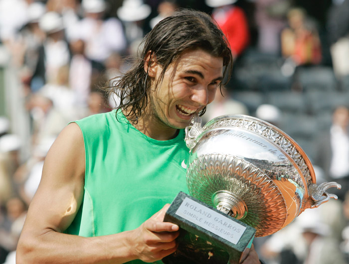
El 23 de mayo empezó el segundo Grand Slam del año: Roland Garros, donde venía de ser eliminado en cuarta
ronda el 2009 a manos de Robin Söderling, su única derrota en el torneo hasta ese entonces. Nadal partía
como cabeza de serie número 2 y tras el sorteo del cuadro quedaría situado en el mismo lado que el serbio
Novak Djokovic y el español David Ferrer, a quienes podría enfrentar en una hipotética semifinal, pero
evitando a Roger Federer, Andy Murray y Robin Söderling hasta la final, Nadal llegaba como gran favorito
tras su fantástica gira sobre arcilla. En su partido de debut en 1.ª ronda venció al wild-card francés
Gianni Mina por triple 6-2. En 2.ª ronda venció con facilidad a Horacio Zeballos por 6-2, 6-2 y 6-3, en 3.ª
ronda venció al australiano Lleyton Hewitt por 6-3, 6-4, 6-3 y en 4.ª ronda siguió mostrando un buen nivel
al vencer al brasileño Thomaz Bellucci por 6-2, 7-5 y 6-4 accediendo a la siguiente semana mostrando un gran
tenis y sin ceder sets. En cuartos de final se impuso a su compatriota Nicolás Almagro por 7-6(2), 7-6(3) y
6-4 en su partido más difícil en esta edición, en semifinales se enfrentó al austriaco Jürgen Melzer, la
sorpresa del torneo y quien venía de vencer a Ferrer y Djokovic, no fue problemas para Rafa venciéndole por
6-2, 6-3 y 7-6(6) en un poco más de 2 horas para acceder a su quinta final en París. El 6 de junio de 2010
jugó la final contra el sueco Robin Söderling, a quien venció sin problemas por 6-4, 6-2 y 6-4 para ganar su
quinto Roland Garros, sin ceder un solo set al igual que en 2008 y quedando a uno solo del récord histórico
de Bjorn Borg (6), también vengadose de su derrota del año anterior en octavos de final. También logra el
denominado Clay Slam (que consiste en ganar los tres Masters 1000 sobre arcilla y Roland Garros) y para
cerrar con broche de oro su reconquista en París, recupera el número uno del mundo tras haberlo perdido en
Wimbledon 2009, tras su título y derrota de Roger Federer en cuartos. Durante la ceremonia de premiación, se
le vio visiblemente emocionado, llorando durante varios minutos. Por lo tanto, terminó invicto en su
superficie predilecta en 2010, perdiendo solo 2 sets en 22 partidos jugados (contra Ernests Gulbis en Roma y
Nicolás Almagro en Madrid).
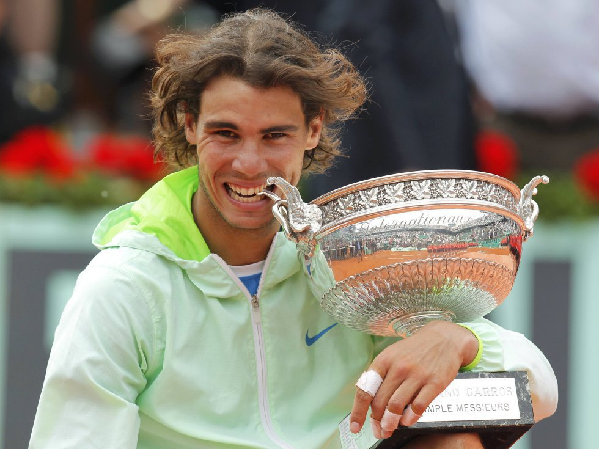
El domingo 22 de mayo comenzaba el segundo Grand Slam de la temporada: Roland Garros, donde le tocaba
defender título y el número uno en París, pero para esta ocasión no llegaba como claro favorito debido a que
Novak Djokovic había puesto en duda su invencibilidad desde el inicio de la temporada y sumado a sus
triunfos sobre el en arcilla, ponían en duda si Nadal podría revalidar el trofeo, además solo había 405
puntos de diferencia entre ellos en la lucha por el número uno (Nadal 12 070 - Djokovic 11 665) así que si
Djokovic llevaba a la final del torneo, Nadal ni revalidando el título retenería el 1. En la primera
ronda, debuta contra el cañonero norteamericano John Isner, Nadal fue empujado a sus límites en este partido
ya que por primera vez se fue a 5 sets en Roland Garros, prevaleciendo por 6-4, 6-7(2), 6-7(2), 6-2, 6-4 en
4 horas de lucha.173 En segunda ronda ganó ante Pablo Andújar por 7-5, 6-3, 7-6(4) en 3 horas en un partido
en el que logra una increíble remontada en la tercera manga al revertir un 1-5 0-40 restando y salvando 8
bolas de set en el camino. Después de estos 2 difíciles partidos, el camino empezó a ser más fácil desde la
tercera ronda venciendo a la promesa croata Antonio Veic por 6-1, 6-3, 6-0. En cuarta ronda le ganó a otro
croata, Ivan Ljubičić por 7-5, 6-3, 6-3 subiendo bastante su nivel de cara a la segunda semana. En los
cuartos de final, Nadal se enfrentó al número 5 del mundo, finalista de las dos últimas ediciones y único
hombre que lo había vencido en Roland Garros: Robin Söderling y le ganó por 6-4, 6-1, 7-6(3). Ya en
semifinales el español se enfrentaba al británico y 4 del mundo Andy Murray, Nadal ganó por 6-4, 7-5, 6-4
para acceder a su sexta final en París, mientras tanto en la otra semifinal se produjo el bombazo del torneo
ya que Roger Federer eliminó a Novak Djokovic por 7-6(5), 6-3, 3-6, 7-6(5) contardonle una racha de 43
victorias consecutivas al serbio y dejando en manos de Nadal continuar como #1 post RG si ganaba el torneo.
Como fue mencionado anteriormente, la final se jugó el domingo 5 de junio contra el n.º 3 del mundo Roger
Federer, siendo este su octavo enfrentamiento en una final de Grand Slam (5-2 Nadal en ese entonces) y por
cuarta vez en Roland Garros (3-0 Nadal), en un partido peleado lleno de lucha y emoción Nadal logró ganar en
4 sets por 7-5, 7-6(3), 5-7, 6-1 teniendo una épica remontada en el primer set al igual que contra Pablo
Andújar en 2.º ronda, salvó un punto de set mientras sacaba 2-5 abajo en el primero, logró ganar 5 games
seguidos y se impuso por 7-5 en el primero. Con su sexto título en Roland Garros, Nadal igualó a Björn
Borg como los más ganadores en el torneo parisino y también logró su décimo Major con solo 25 años.
Paralelamente, también mantuvo el número uno tras su triunfo en París tras la derrota de Nole en
semifinales, aunque sólo con 85 puntos de diferencia.
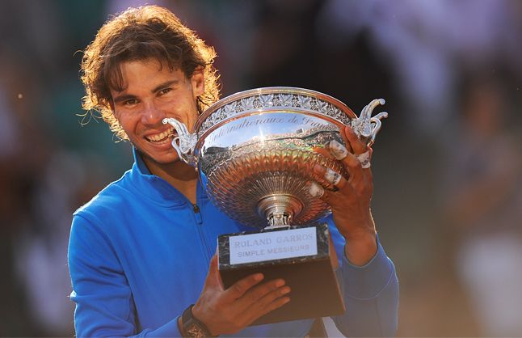
Nadal llegó al segundo Grand Slam del año: Roland Garros, como gran favorito, y con el objetivo de ganar su
séptimo título en París y batir el récord de Björn Borg. Comenzó el torneo con una aplastante victoria por
6-2, 6-2 y 6-1 sobre el italiano Simone Bolelli, después en segunda ronda venció al uzbeco Denis Istomin por
un claro 6-2, 6-2 y 6-0. En tercera ronda también derrotó fácilmente al argentino Eduardo Schwank por 6-1,
6-3, 6-4, y en octavos de final, también a otro argentino y su amigo Juan Mónaco por un fácil 6-2, 6-2 y
6-0, en su cuatro primeros partidos apenas cedió 17 juegos. En cuartos tuvo un partido algo complicado pero
igual lo saco adelante en sets corridos ante su compatriota Nicolás Almagro (sembrado número 12) por 7-6(4),
6-2 y 6-3. En semifinales venció a otro español, David Ferrer (sembrado número 6), por un claro 6-2, 6-2 y
6-1 clasificando para su séptima final en Roland Garros (sin ceder un solo set) en 8 participaciones. En la
final, se enfrenta con su clásico rival y número uno del mundo, Novak Djokovic, contra quien perdió sus
últimas tres finales de Grand Slam. Esto también marcó la primera vez que dos jugadores se enfrentaron en
cuatro finales consecutivas de Grand Slam. Pero logra romper la mala racha venciéndolo en 4 sets y en un
partido de día que terminó el día lunes por lluvia con un score de 6-4, 6-3, 2-6 y 7-5 en 3 horas y 49
minutos logrando su séptimo título en Roland Garros, batiendo el récord de Björn Borg, y su undécimo Grand
Slam, siendo la primera final en París desde 1973 que terminó el lunes. Durante la gira de tierra batida
2012, Nadal solo perdió un total de tres sets (uno solo en arcilla roja).
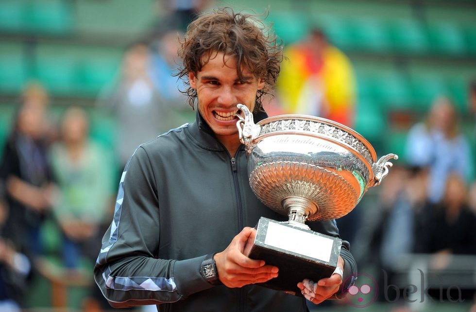
Llegó a Roland Garros como máximo favorito una vez más demostrando estar recuperando en un 100 % de su
lesión en la rodilla, el sorteo lo dejó del mismo lado del cuadro del número uno, Novak Djokovic, pudiendo
enfrentarse en una potencial semifinal. Derrotó en primera ronda a Daniel Brands, en un partido
igualadísismo por 4-6, 7-6(4), 6-4 y 6-3. Siendo esta la primera vez que pierde el primer set en su
primer partido en Roland Garros. En segunda ronda volvió a sufrir para derrotar a Martin Kližan por 4-6,
6-3, 6-3 y 6-3. En tercera ronda volvió a su mejor nivel y ganó por 7-6(5), 6-4 y 6-4 al número 27 del mundo
Fabio Fognini, siendo este su primer triunfo en sets corridos en esta edición. En cuarta ronda no tuvo
problemas para deshacerse de Kei Nishikori 6-4, 6-1 y 6-3, al igual que con Stanislas Wawrinka 6-2, 6-3 y
6-1 en cuartos de final, disipando cualquier duda sobre su nivel de juego. En semifinales se midió al número
uno del mundo, Novak Djokovic, un partido que era tan esperado desde el sorteo. El encuentro prometía ser
trepidante y no defraudó. En un despliegue de golpes perfectos y de proezas físicas, ambos jugadores
estuvieron a su mejor nivel. Durante el quinto set, Nadal perdió su servicio en el primer juego, Djokovic
lideró break arriba hasta el 4-3, cuando tras un remate tocó la red y le dio un break point a Nadal que el
español no desaprovechó (si ganaba ese juego hubiera quedado recibiendo para partido), quedando 4 iguales.
En el 7-8 Djokovic quedó 0-40 abajo algo que le dio triple punto de partido a Nadal, algo que el balear no
desaprovechó a la primera tras una derecha la de Nole ganando por un marcador final de 6-4, 3-6, 6-1, 6-7(3)
y 9-7 después de 4 horas y 37 minutos. Este partido es ampliamente considerado como uno de los mejores
partidos sobre tierra batida. El 9 de junio de 2013, conquistó su 8.º Roland Garros en 9 participaciones
tras derrotar a David Ferrer por un 6-3, 6-2 y 6-3 en 2 horas y 17 minutos. Con este torneo se adjudicó un
récord histórico, al ser el primer jugador en lograr 8 veces el mismo torneo de Grand Slam y logrando
también el duodécimo título de Grand Slam de su carrera. También batió otro récord en el torneo parisino,
batió la mayor cantidad de victorias en el torneo camino a su octava "Copa de los Mosqueteros" con 59
triunfos y 1 sola derrota.
Nadal aspiraba a levantar su novena Copa de los Mosqueteros, y no solo eso, si no que también estaba en
juego el número uno del ranking ATP, solo una victoria final le permitiría mantener el trono. A pesar de las
dudas cosechadas después de la derrota ante Novak Djokovic en Roma, Nadal avanzó hasta la final mostrando un
juego sólido y contundente, derrotando por el camino a Robby Ginepri (6-0, 6-3, 6-0), Dominic Thiem (6-2,
6-2, 6-3), Leonardo Mayer (6-2, 7-5, 6-2), Dušan Lajović (6-1, 6-2, 6-1), David Ferrer (4-6, 6-4, 6-0, 6-1)
y a Andy Murray en semifinales por 6-3, 6-2 y 6-1 en solo 1 hora y 40 minutos. El 8 de junio de 2014 fue la
final ante el serbio Novak Djokovic, número 2 del mundo y aspirante a arrebatarle el primer puesto del
ranking a Nadal si lograba la victoria. Finalmente el español conquistó su noveno Roland Garros tras una
doble falta del serbio (curiosamente al igual que en 2012) por 3-6, 7-5, 6-2 y 6-4 en 3 horas y 31 minutos y
así terminaba con una racha de 4 derrotas consecutivas contra el serbio. De esta forma, Nadal batió el
récord que hasta entonces compartía con Björn Borg de cuatro Roland Garros consecutivos, con cinco. Además
le sirvió para alcanzar al estadounidense Pete Sampras en trofeos de Grand Slam, con catorce, y se convirtió
en el primer jugador en la historia en ganar nueve veces el mismo torneo de Grand Slam y el primero en ganar
al menos un Grand Slam en 10 temporadas consecutivas.
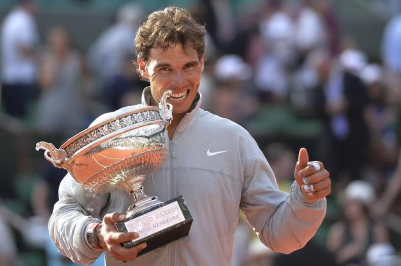
El 22 de mayo arrancaba el segundo Grand Slam del año: Roland Garros. Tras el abandono en tercera ronda el
año anterior, Nadal llegaba a la capital francesa buscando levantar de nuevo la Copa de los Mosqueteros por
décima vez en su carrera. El español partía como cabeza de serie número 4 y quedaría situado en la parte
baja del cuadro, compartiendo sección con el serbio Novak Djokovic y el austríaco Dominic Thiem. En primera
ronda vencería al francés Benoit Paire por 6-1, 6-4 y 6-1, en segunda ronda al neerlandés Robin Haase por
6-1, 6-4 y 6-3 y en tercera ronda al georgiano Nikoloz Basilashvili por un lapidario 6-0, 6-1 y 6-0 en su
partido número cien sobre tierra batida al mejor de 5 sets (98 victorias y solo 2 derrotas). Después de
celebrar su cumpleaños 31 y ya en la segunda semana del torneo, se enfrentaría en octavos de final a su
compatriota Roberto Bautista Agut al que derrotaría por 6-1, 6-2 y 6-2, y en cuartos de final al también
español Pablo Carreño, al que vencería tras retirada por lesión de Carreño cuando Nadal dominaba en el
marcador por 6-2 y 2-0. a Así, Nadal alcanzaba las semifinales de Roland Garros por décima vez en su
carrera, habiendo vencido en las nueve anteriores. En ellas, se mediría al joven austríaco y séptimo del
mundo Dominic Thiem, quien aplastó a Novak Djokovic en la ronda anterior y quién era el único jugador que lo
derrotó en tierra batida desde el comienzo de la temporada, Nadal se cobraría revancha de lo ocurrido en
Roma hace 2 semanas atrás y lo aplastaría por un cómodo 6-3, 6-4 y 6-0 en 2 horas y 7 minutos de partido
consiguiendo el pase a la final del torneo, siendo esta la vigésimo segunda final de Grand Slam en su
carrera (segunda marca histórica solo superada por el suizo Roger Federer con 28) y décima en Roland Garros.
En la final enfrentaría al suizo, número 3 del mundo e invicto en finales de Grand Slam (3-0), Stan
Wawrinka, verdugo de Nadal en la final del Abierto de Australia 2014. Esta vez y de manera incontestable, el
manacorí vencería por un claro 6-2, 6-3 y 6-1 en solo 2 horas y 5 minutos, volviendo a reconquistar Roland
Garros después de tres años (Desde 2014) y alzándose de esta forma con su décimo Roland Garros y su
decimoquinto grande, rompiendo así el empate que mantenía con el estadounidense Pete Sampras con 14 títulos
y situándose en segundo lugar en solitario del ranking histórico de ganadores de Grand Slam, únicamente
superado por el suizo Roger Federer con dieciocho. Además, con esta victoria Nadal suma el título número 73
de su carrera, el número 53 en tierra batida y regresa al número 2 del ranking ATP casi tres años después de
dejarlo, solo quedando detrás de Andy Murray, además este fue su tercer Grand Slam que gana sin ceder sets
como en Roland Garros 2008 y Roland Garros 2010 y en el que menos juegos concedió, sólo 35 en sus siete
partidos y con un promedio de 5 por partido, convirtiéndose en el segundo jugador que menos juegos concede
para levantar un título de Grand Slam (únicamente superado por los 32 juegos cedidos por Björn Borg en
Roland Garros 1978). Este título, llamado "La Décima", convirtió a Nadal en el primer hombre o mujer en la
Era Abierta en ganar diez títulos en un torneo de Grand Slam, además aseguró su clasificación al ATP Finals
con tan sólo 6 meses de competición disputada.
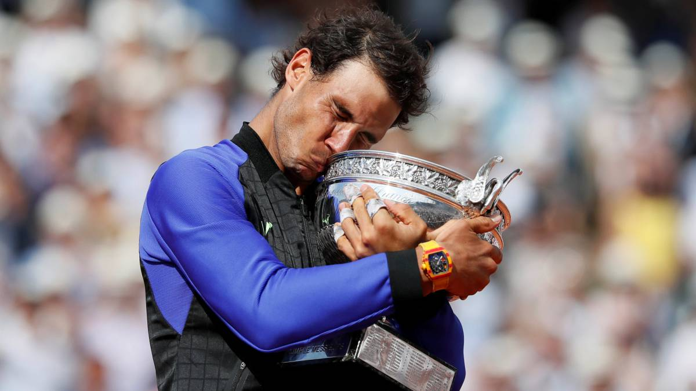
El 28 de mayo comenzaba en París el segundo Grand Slam de la temporada: Roland Garros, llegando con una
marca de 3 títulos en 4 torneos y 17 victorias en 18 juegos en tierra batida esta temporada. Nadal partía
como cabeza de serie número uno, quedando situado en el mismo lado del cuadro que jugadores como el
sudafricano Kevin Anderson, el argentino Juan Martín Del Potro o el croata Marin Cilic, evitando así hasta
la final a sus principales rivales por el título como el serbio Novak Djokovic, el alemán Alexander Zverev o
el austriaco Dominic Thiem. El español debutaba en primera ronda venciendo al italiano Simone Bolelli por
6-4, 6-3 y 7-6(9) tras salvar 4 bolas de set en el tiebreak del tercero y en 2 horas y 57 minutos en un
partido de dos días tras la suspensión por lluvia en el primero, en segunda ronda vencía al argentino Guido
Pella por 6-2, 6-1 y 6-1 y en tercera ronda se deshacía del francés Richard Gasquet por 6-3, 6-2 y 6-2. Ya
en la segunda semana del torneo, Nadal se enfrentaba en octavos de final al joven alemán Maximilian
Marterer, consiguiendo la victoria por 6-3, 6-2 y 7-6(4) en dos horas y media en el día después de su
cumpleaños 32, alcanzando también las 900 victorias como profesional y solo 187 derrotas (con un récord de
82,8 % de victorias). Convirtiéndose en el quinto jugador en la Era Abierta en alcanzar 900 victorias,
detrás de Guillermo Vilas (948), Ivan Lendl (1068), Roger Federer (1149, todavía en actividad) y Jimmy
Connors con 1256. En cuartos de final su rival sería el argentino Diego Schwartzman, del que se desharía por
4-6, 6-3, 6-2 y 6-2 en 3 horas y 42 minutos en un partido disputado en dos días a causa de la lluvia, al
perder el primer set, puso fin a su racha de 37 sets consecutivos en Roland Garros. En semifinales, se
enfrentó por tercera vez a un jugador argentino en esta edición de Roland Garros, Juan Martín del Potro, y
lo vence en tres sets por un claro 6-4, 6-1 y 6-2, convirtiéndose en el segundo jugador en la historia en
jugar 11 finales en un mismo Grand Slam, empatando las 11 finales de Roger Federer en Wimbledon (8
victorias), siendo además la vigésimo cuarta final en la categoría de Grand Slam, segunda marca histórica
solo superada por el suizo Roger Federer con 30. En ella, su rival sería el joven austriaco Dominic Thiem,
único jugador en vencer a Nadal en los dos últimos años sobre tierra batida (Roma 2017 y Madrid 2018). Esta
vez, el balear haría prevalecer su superioridad en el torneo parisino y conquistaba el título por un
marcador de 6-4, 6-3 y 6-2 en 2 horas y 42 minutos, alzándose así con su Grand Slam número diecisiete,
situándose a tan solo tres de distancia del suizo Roger Federer. De nuevo Nadal volvía a hacer historia,
ampliando de esta forma su propio récord de trofeos en Roland Garros, con 11, marca absoluta en la categoría
individual masculina, solo igualada por la australiana Margaret Court con 11 títulos en el Abierto de
Australia, con el pequeño dato de que 7 fueron cuando el Abierto de Australia se llamaba Campeonatos
Australianos. Además supone el título número 79 para el español y el número 57 en tierra batida. Además,
Nadal se convirtió en el cuarto tenista en la Era Abierta en ganar tres o más títulos de Grand Slam después
de cumplir los 30 años.
El domingo 26 de mayo arrancaba el segundo Grand Slam de la temporada: Roland Garros. Nadal partía como
cabeza de serie número 2 y quedaba situado en la parte baja del cuadro, con posibles enfrentamientos en
cuartos de final ante el japonés Kei Nishikori y en semifinales ante el suizo Roger Federer. En primera
ronda debutaría con una victoria sencilla ante el alemán Yannick Hanfmann por 6-2, 6-1 y 6-3, en segunda
ronda haría lo propio ante el también alemán Yannick Maden por 6-1, 6-2 y 6-4 y en tercera ronda vencería al
belga David Goffin por 6-1, 6-3, 4-6 y 6-3, finalizando una racha de 17 sets ganados de forma consecutiva en
la capital francesa. En octavos de final derrotaría al argentino Juan Ignacio Londero por 6-2, 6-3 y 6-3,
accediendo a cuartos de final y citándose con el japonés Kei Nishikori, del que daría cuenta por 6-1, 6-1 y
6-3. Mostrando un juego sólido y eficaz, el manacorí accedía a las semifinales del torneo por decimosegunda
vez en quince participaciones, donde se encontraba invicto en tales instancias y la trigésimo primera de
Grand Slam (tercera marca histórica empatado con el estadounidense Jimmy Connors), en ella se encontraría
ante el suizo y ex número uno del mundo Roger Federer, al que vencería con contundencia por 6-3, 6-4 y 6-2,
en un partido marcado por las difíciles condiciones meteorológicas debidas al fuerte viento, cortando de
esta forma la racha de 5 derrotas consecutivas ante el suizo entre noviembre de 2015 y octubre de 2017,
siendo su último triunfo en el Abierto de Australia 2014, y estableciendo el head-to-head particular entre
ambos en 24-15 favorable al español y 10-4 en Grand Slam. Nadal alcanzaba la final del torneo por
decimosegunda vez habiendo cedido un solo set por el camino y mostrando un nivel de forma cercano a su mejor
versión. En ella volvería a enfrentarse por segundo año consecutivo al austriaco Dominic Thiem, y al que
volvería a derrotar por 6-3, 5-7, 6-1 y 6-1, logrando el triunfo 950 de su carrera, su número 260 en Grand
Slam (93 en Roland Garros, récord absoluto), y alzándose de esta forma con su décimo octavo título de Grand
Slam, ampliando las distancias con el serbio Novak Djokovic (15) y situándose por primera vez en su carrera
a tan sólo dos títulos de empatar con el máximo ganador: el suizo Roger Federer (20). Este título además
supone el décimo segundo en Roland Garros para el español (ampliando su propio récord y doblando al segundo
jugador: Björn Borg, con 6 títulos), el número 59 en tierra batida y el 82 en total. También, con doce
títulos deshace el empate que mantenía con la australiana Margaret Court convirtiéndose en el máximo ganador
de un Grand Slam en categoría individual masculina y femenina.
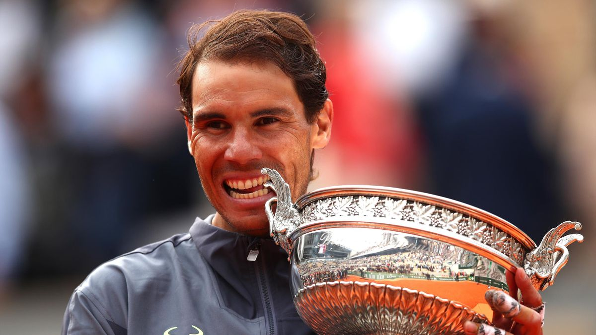
El 27 de septiembre arrancó el último Grand Slam de 2020: Roland Garros. Nadal partía como segundo cabeza de
serie quedando situado tras el sorteo en el mismo lado del cuadro que el austriaco Dominic Thiem y el alemán
Alexander Zverev. El balear comenzaba el torneo con buenas sensaciones, derrotando en primera ronda al
bielorruso Yegor Guerásimov por 6-4, 6-4 y 6-2, en segunda ronda a Mackenzie McDonald por 6-1, 6-0 y 6-3 y
en tercera ronda al italiano Stefano Travaglia por 6-1, 6-4 y 6-0. Ya en octavos de final, venció a
Sebastian Korda por 6-1, 6-1 y 6-2, accediendo a los cuartos de final del torneo donde daría cuenta de la
joven promesa del tenis italiano Jannik Sinner por 7-6, 6-4 y 6-1. Nadal se clasificaba para las semifinales
del torneo por decimotercera vez en su carrera, siendo ésta la número 34 en Grand Slam. En ella se
enfrentaría a su verdugo en Roma, Diego Schwartzman, al que esta vez Nadal derrotaría con contundencia por
6-3, 6-3 y 7-6. De esta forma el balear accedía a la final del torneo por decimotercera vez en su carrera,
la vigésimo octava en Grand Slam (marca sólo superada por Roger Federer, con 31). En ella, se enfrentaría al
serbio y número uno del mundo Novak Djokovic, siendo este el enfrentamiento número 56 entre ambos y el
noveno en una final de Grand Slam. Nadal, mostrando un nivel de juego abrumador, desplegó el mejor tenis de
todo el torneo para derrotar al serbio por un contundente 6-0, 6-1 y 7-5 en 2 horas y 41 minutos, venciendo
así al serbio por primera vez en Grand Slam desde la final de Roland Garros en 2014. Nadal se alzaba con su
decimotercer Roland Garros, consiguiendo además la victoria número cien en el torneo y ampliando su propio
récord de títulos. Además se convierte en el primer jugador de la historia en conquistar cuatro Grand Slams
sin ceder un solo set. De esta forma, el español accede a lo más alto del Olimpo tenístico al igualar los 20
Grand Slams de Roger Federer por primera vez en toda su carrera. También logra formar parte de un selecto
club formado por la australiana Margaret Court, la estadounidense Serena Williams, la alemana Steffi Graf y
el suizo Roger Federer, como únicos hombres y mujeres en conseguir 20 o más Grand Slams en toda la historia.
El español consigue así su título número 60 en tierra batida, ampliando también su propio récord, el título
número 86 de su carrera y se convierte en el primer tenista de la historia en ganar seis Grand Slams una vez
cumplidos los 30 años, el primer tenista en conseguir 13 títulos en un solo torneo en la Era Abierta, alarga
su propio récord como más años consecutivos ganando al menos dos títulos cada año, con 16 (2005-2020), y se
convierte en el tenista con mayor diferencia de años entre su primer y su último Grand Slam, con 15 años y 4
meses.
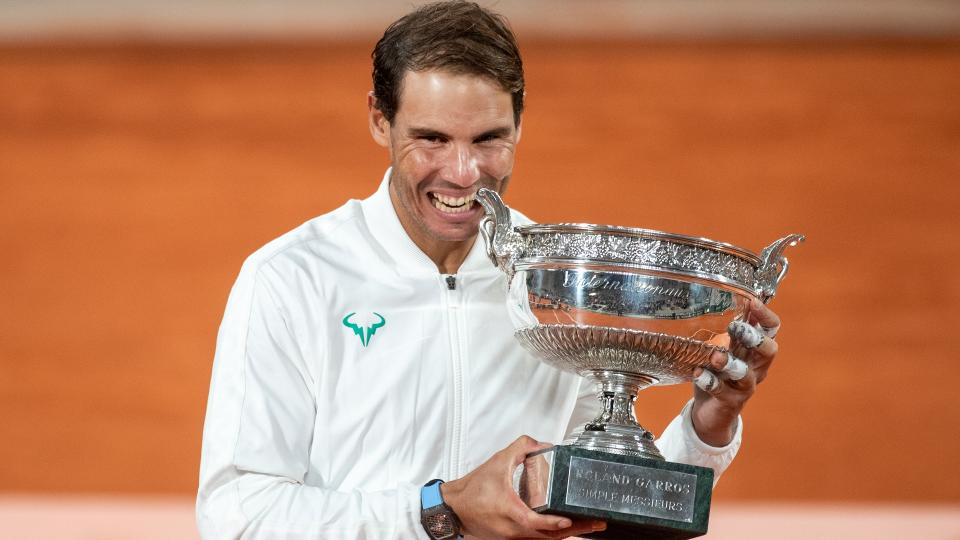
El 22 de mayo arrancaba Roland Garros y lo hacía con Nadal en el cuadro principal, partiendo como cabeza de
serie número 5 y mostrándose optimista, a pesar de sus problemas en el pie izquierdo.El balear quedó
situado en el mismo lado del cuadro que el número uno del mundo, el serbio Novak Djokovic y el alemán
Alexander Zverev. El balear debutó con una cómoda victoria ante el australiano Jordan Thompson por 6-2, 6-2
y 6-2, en segunda ronda vencería al francés Corentin Moutet por 6-3, 6-1 y 6-4 y en tercera ronda daría
cuenta del neerlandés Botic van de Zandschulp por 6-3, 6-2 y 6-4. En octavos de final, Nadal vencería al
joven canadiense Félix Auger-Aliassime por 3-6, 6-3, 6-2, 3-6 y 6-3, en un emocionante encuentro de más de
cuatro horas y que se convirtió en el tercer partido en la carrera del español en la que se veía forzado a
jugar un quinto set en el torneo, después de los disputados ante el estadounidense John Isner en 2011 y ante
el serbio Novak Djokovic en 2013. El español accedía a los cuartos de final del torneo por decimosexta vez
donde se vería las caras, por tercer año consecutivo, con el serbio y número uno del mundo: Novak Djokovic.
En el que suponía el encuentro número 59 entre ambos y después de más de cuatro horas, Nadal se cobró
venganza de la derrota sufrida en 2021 y venció al serbio por 6-2, 4-6, 6-2 y 7-6, mostrando un nivel de
tenis espectacular y despejando dudas acerca de su nivel de juego. Rafa dejaba el head-to-head entre ambos
en 29-30 favorable al serbio y accedía a las semifinales del torneo por decimoquinta vez. En ellas, se midió
con Alexander Zverev quien, al inicio del tie-break del segundo set y con el partido dominado por Nadal por
7-6 en el primer set, se torcía el tobillo viéndose forzado a retirarse del encuentro. El español accedía a
la trigésima final de Grand Slam de su carrera (marca sólo superada por las 31 finales de Roger Federer y de
Novak Djokovic) y su decimocuarta final en Roland Garros, donde se enfrentaría al joven noruego Casper Ruud,
al que Rafa aplastaría en poco más de dos horas por 6-3, 6-3 y 6-0. Nadal lograba así su vigésimo segundo
título de Grand Slam, ampliando aún más la diferencia que mantiene con el suizo Roger Federer y el serbio
Novak Djokovic en el palmarés, sumando su decimocuarto título de Roland Garros y convirtiéndose en el
ganador más longevo en la historia del torneo, superando el récord de su compatriota, el español Andrés
Gimeno, que lo logró con 34 años de edad. Además se convierte en el tercer jugador de la Era Abierta en
lograr conquistar los dos primeros Grand Slams del año: el Abierto de Australia y Roland Garros, y es el
tercer jugador en lograr un Grand Slam venciendo a cuatro jugadores del top 10, tras el suizo Roger Federer
y el sueco Mats Wilander. Este título supone el octavo Grand Slam de Nadal pasados los 30 años (récord
compartido con el serbio Novak Djokovic), el título número 92 en su palmarés y el número 63 en tierra
batida. Al finalizar el encuentro y debido a los rumores surgidos por una posible retirada del tenis, Nadal
declaró en rueda de prensa que haría todo lo posible por seguir compitiendo y participar en Wimbledon, tras
revelar que tuvo que recurrir a infiltraciones en su pie izquierdo durante las dos semanas del torneo,
debido al fuerte dolor que sufre en el mismo.